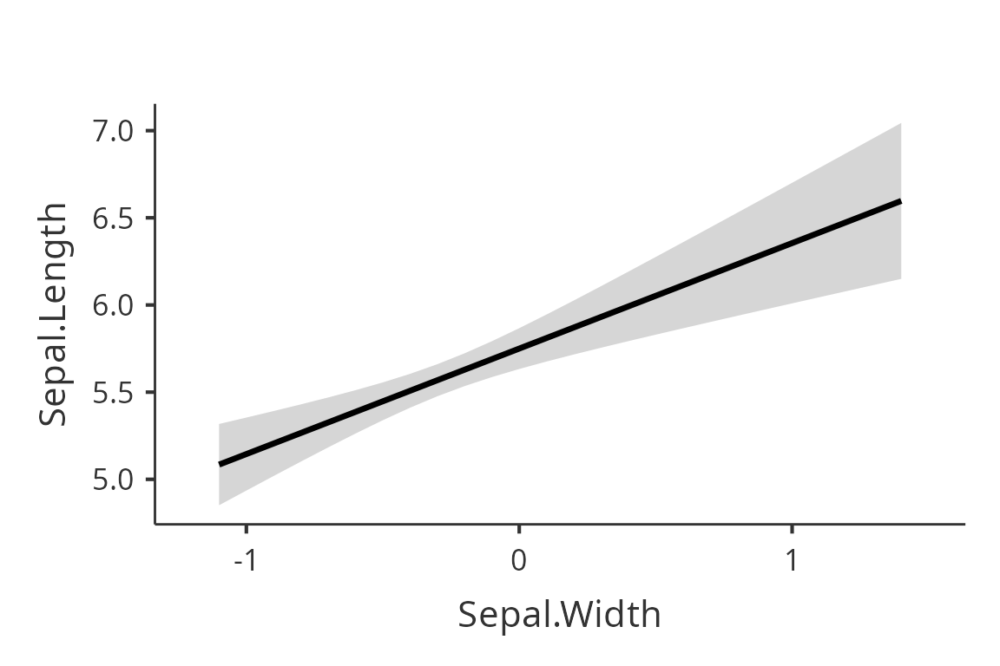
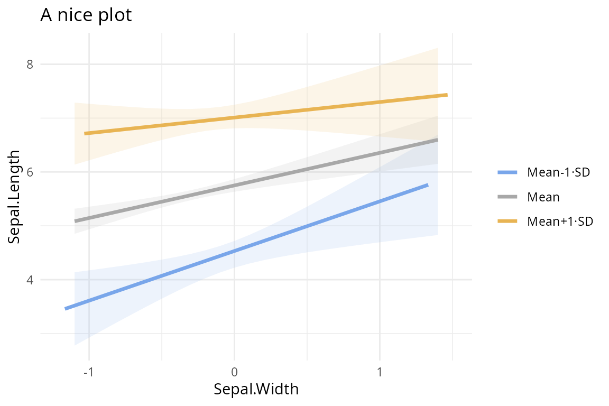

Plots in GAMLj
Marcello Gallucci
2024-07-15
vignettes_plot.Rmd
library(GAMLj3)Obtaining a plot
GAMLj functions
(gamlj_lm(),gamlj_glm(),gamlj_mixed()
and gamlj_gmixed()) can produce plots including up to three
variables. The plots portrait the model predicted values in the Y-axis.
Using the functions, one can obtain the plots by using the following
options:
-
plot_xthe variable in the X-axis -
plot_zthe moderator variable, whose levels define the traces (separated lines) -
plot_bythe variable whose levels define the two-way interactions in multiple plots (separated plots)
Example
We use the iris R dataframe. Assume we want to plot the
influence of Sepal.Width, Petal.Length and
Petal.Width on Sepal.Length, and their
interactions. We use gamlj_lm() to estimate the model and
ask for the plots.
First we ask for the plot of the main effect of
Sepal.Width. We use plot() without any option
to extract the plot from the galmj results object.
mod<-gamlj_lm(formula=Sepal.Length~Sepal.Width*Petal.Length*Petal.Width,
data=iris,
plot_x = "Sepal.Width"
)
plot(mod)
To have additional plots, we can re-estimate the model using the
options described above or using plot(). The function
plot() accepts either a formula or character options. The
formula is a right hand side formula specifying the X-axis variable and
the (optional) moderators.
Examples are:
Two-way plots
plot(mod,formula = ~Sepal.Width:Petal.Length)
Because the moderator variable Petal.Length is a
continuous variable, the function plots the independent variable effect
at three different levels of the moderator. By default, the three levels
are the mean, the mean plus one standard deviation and the mean minus
one standard deviation. The conditioning values can be changed with the
option covs_conditioning. The option accepts
mean_sd (default) and percent, for 25th,50th,
and 75th percentiles.
plot(mod,formula = ~Sepal.Width:Petal.Length, covs_conditioning="percent")Character options
Alternatively, the function accepts characters options. The three options relevant here are:
-
plot_xdefining the variable in the X-axis -
plot_zdefining the variable whose levels define the way the effect of the variable in the X-axis is broken down (the moderator) -
plot_bydefining the variable whose levels define the way the two-way interaction is broken down
A two-way plot, for instance, can be obtained as follows:
plot(mod,plot_x="Sepal.Width", plot_z="Petal.Length")Other options
The function plot accepts any option which is accepted
by gaml* functions. The most relevant for producing plots
are:
-
plot_raw(logical) to plot the observed scores along the predicted values -
plot_yscale(logical) to set the range of the Y-axis equal to the actual range of the dependent variable (it does not apply to generalized linear models) -
plot_xoriginal(logical) to set the scale of the X-axis as the original variable, so not centered or standardized -
plot_aroundto add confidence intervals bars (ci) or error barssealong the predicted values. Default isnone.
plot(mod,plot_x="Sepal.Width", plot_z="Petal.Length", plot_raw=T,plot_around="ci")
plot(mod2,formula=~Species,plot_raw=T,plot_around="se")In addition, the plot can be saved in a variable and manipulated as any other ggplot object, for instance to change the theme or add a title.
p<-plot(mod,plot_x="Sepal.Width", plot_z="Petal.Length", plot_raw=T,plot_around="ci")
p+ggplot2::ggtitle("A nice plot")+ggplot2::theme_minimal()
In case of multiple plots produced, the ggplot objects are contained
in a list returned by plot().
Other GAMLj functions
All model functions in GAMLj,
(gamlj_lm(),gamlj_glm(),gamlj_mixed()
and gamlj_gmixed()), can produce plots using the options
and functions described above. Here an example with a generalized
(logistic) mixed model in which we plot the fixed and random effects
predicted values.
data("clustermanymodels")
clustermanymodels$ybin<-factor(clustermanymodels$ybin)
mod3<-gamlj_gmixed(formula=ybin~z+(1+z|cluster),data=clustermanymodels)
p<-plot(mod3, plot_x = "z",plot_re=T)